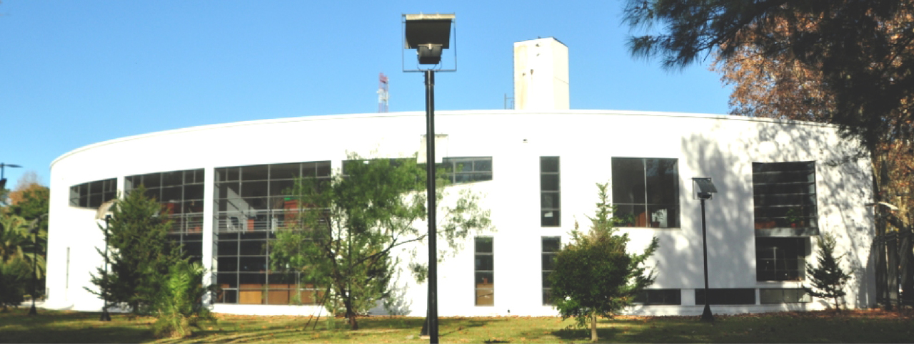

{% load static wagtailcore_tags wagtailuserbar %}

<!DOCTYPE html>
<html lang="es">

<head>
    <meta charset="utf-8" />
    <title>
        {% block title %}
        {% if page.seo_title %}{{ page.seo_title }}{% else %}{{ page.title }}{% endif %}
        {% endblock %}
    </title>
    <meta name="viewport" content="width=device-width, initial-scale=1" />
    <link rel="shortcut icon" href="../../media/images/logo folp pestaña.png" type="image/x-icon">
    {# Bootstrap 5 & FontAwesome #}
    <link href="https://cdn.jsdelivr.net/npm/bootstrap@5.3.0/dist/css/bootstrap.min.css" rel="stylesheet">
    <link rel="stylesheet" href="https://cdnjs.cloudflare.com/ajax/libs/font-awesome/6.4.0/css/all.min.css">

    {# Google Fonts #}
    <link
        href="https://fonts.googleapis.com/css2?family=Montserrat:wght@400;700&family=Roboto:wght@300;400;700&display=swap"
        rel="stylesheet">

    <link rel="stylesheet" type="text/css" href="{% static 'css/mysite.css' %}">
    <link href="https://fonts.googleapis.com/css2?family=Montserrat:wght@700&family=Roboto:wght@400;500&display=swap"
        rel="stylesheet">
    {% block extra_css %}{% endblock %}
</head>
<script async src="https://www.googletagmanager.com/gtag/js?id=G-XXXXXXXXXX"></script>

<body class="{% block body_class %}{% endblock %}">
    {% wagtailuserbar %}
    {% load facultad_tags %} {# Necesitaremos crear este tag para que sea global #}
    {% get_alertas as alertas %}
    {% for alerta in alertas %}
    {% if alerta.mostrar %}
    <div class="alert {% if alerta.color_urgencia %}alert-danger{% else %}alert-primary{% endif %} mb-0 text-center rounded-0 py-2"
        role="alert" style="font-size: 0.9rem; font-weight: bold;">
        <i class="fas fa-exclamation-triangle me-2"></i> {{ alerta.texto }}
    </div>
    {% endif %}
    {% endfor %}
    <header class="header-unlp shadow-sm banner-innovador">

        <div class="background-animado-wrapper">
            
        </div>

        <div class="banner-logos container-fluid px-lg-5">
            <a href="/"></a>

            <!--      <div class="text-banner text-white">
                <h2 class="titulo-facultad">FACULTAD DE ODONTOLOGÍA</h2>
                <p class="subtitulo-facultad mb-0">Universidad Nacional de La Plata</p>
            </div>

            
        </div> -->
    </header>
    <nav class="navbar navbar-expand-lg navbar-light bg-white py-0">
        <div class="container">
            <button class="navbar-toggler" type="button" data-bs-toggle="collapse" data-bs-target="#navbarNav">
                <span class="navbar-toggler-icon"></span>
            </button>
            <div class="collapse navbar-collapse" id="navbarNav">
                <ul class="navbar-nav w-100 justify-content-between">
                    <li class="nav-item"><a class="nav-link" href="/">Inicio</a></li>

                    <li class="nav-item dropdown-hover">
                        <a class="nav-link dropdown-toggle" style="cursor: pointer;" role="button"
                            data-bs-toggle="dropdown">Institucional</a>
                        <ul class="dropdown-custom dropdown-menu shadow">
                            <li><a href="{% slugurl 'institucional' %}">Principal Institucional</a></li>
                            <li><a href="{% slugurl 'autoridadess' %}">Autoridades</a></li>
                            <li><a href="{% slugurl 'historia' %}">Historia</a></li>
                            <li><a href="{% slugurl 'hospital' %}">Hospital Universitario</a></li>
                            <li><a href="{% slugurl 'eveninstitucionales' %}">Eventos Institucionales</a></li>
                            <li><a href="{% slugurl 'museo' %}">Museo</a></li>
                            <li><a href="{% slugurl 'identidad' %}">Identidad Visual</a></li>
                        </ul>
                    </li>

                    <li class="nav-item dropdown-hover">
                        <a class="nav-link dropdown-toggle" href="#" role="button"
                            data-bs-toggle="dropdown">Estudiantiles</a>
                        <ul class="dropdown-custom dropdown-menu shadow">
                            <li><a href="{% slugurl 'estudiantiles' %}">Principal Estudiantiles</a></li>
                            <li><a href="{% slugurl 'notiest' %}">Noticias</a></li>
                            <li><a href="{% slugurl 'asignaturas' %}">Informacion de Asignaturas</a></li>
                            <li><a href="{% slugurl 'becas' %}">Becas</a></li>
                            <li><a href="{% slugurl 'hclinica' %}">Historia Clinica y Material de Descarga</a></li>
                        </ul>
                    </li>

                    <li class="nav-item dropdown-hover">
                        <a class="nav-link dropdown-toggle" href="#" role="button"
                            data-bs-toggle="dropdown">Academica</a>
                        <ul class="dropdown-custom dropdown-menu shadow">
                            <li><a href="{% slugurl 'academica' %}">Principal Academica</a></li>
                            <li><a href="{% slugurl 'carrera' %}">Carrera Odontologia</a></li>
                            <li><a href="{% slugurl 'alumnos' %}">Alumnos</a></li>
                            <li><a href="{% slugurl 'biblioteca' %}">Biblioteca</a></li>
                            <li><a href="{% slugurl 'homologacion' %}">Homologacion</a></li>
                            <li><a href="{% slugurl 'tecuniversitarias' %}">Tecnicaturas Universitarias</a></li>
                        </ul>
                    </li>

                    <li class="nav-item dropdown-hover">
                        <a class="nav-link dropdown-toggle" href="#" role="button"
                            data-bs-toggle="dropdown">Investigacion</a>
                        <ul class="dropdown-custom dropdown-menu shadow">
                            <li><a href="{% slugurl 'investigacion' %}">Principal Investigacion</a></li>
                            <li><a href="{% slugurl 'proyectos' %}">Proyectos</a></li>
                            <li><a href="{% slugurl 'revcientificas' %}">Revistas Cientificas</a></li>
                            <li><a href="{% slugurl 'creacion' %}">Resolucion del Centro y los Objetivos</a></li>
                            <li><a href="{% slugurl 'iies' %}">IIES</a></li>
                        </ul>
                    </li>

                    <li class="nav-item dropdown-hover">
                        <a class="nav-link dropdown-toggle" href="#" role="button"
                            data-bs-toggle="dropdown">Posgrado</a>
                        <ul class="dropdown-custom dropdown-menu shadow">
                            <li><a href="{% slugurl 'posgrado' %}">Principal Posgrado</a></li>
                            <li><a href="{% slugurl 'doctorado' %}">Doctorado</a></li>
                            <li><a href="{% slugurl 'maestrias' %}">Maestrias</a></li>
                            <li><a href="{% slugurl 'especializaciones' %}">Especializaciones</a></li>
                            <li><a href="{% slugurl 'cursosposgrado' %}">Cursos</a></li>
                            <li><a href="{% slugurl 'titposgrado' %}">Tramite de Titulo</a></li>
                        </ul>
                    </li>

                    <li class="nav-item dropdown-hover">
                        <a class="nav-link dropdown-toggle" href="#" role="button"
                            data-bs-toggle="dropdown">Extension</a>
                        <ul class="dropdown-custom dropdown-menu shadow">
                            <li><a href="{% slugurl 'extension' %}">Principal Extension</a></li>
                            <li><a href="{% slugurl 'programas' %}">Programas y Proyectos</a></li>
                            <li><a href="{% slugurl 'politicas' %}">Politicas Sociales</a></li>
                            <li><a href="{% slugurl 'voluntariado' %}">Voluntariado</a></li>
                            <li><a href="{% slugurl 'entornos' %}">Revista Entornos</a></li>
                            <li><a href="{% slugurl 'revista-el-lado-b-de-la-operatoria-dental-22262' %}">El Lado B de
                                    la Operatoria Dental</a></li>
                        </ul>
                    </li>

                    <li class="nav-item dropdown-hover">
                        <a class="nav-link dropdown-toggle" href="#" role="button"
                            data-bs-toggle="dropdown">Prosecretaria de APS</a>
                        <ul class="dropdown-custom dropdown-menu shadow">
                            <li><a href="{% slugurl 'aps' %}">Principal APS</a></li>
                            <li><a href="{% slugurl 'adei' %}">ADEI</a></li>
                            <li><a href="{% slugurl 'expo' %}">Expo Universidad</a></li>
                            <li><a href="{% slugurl 'jornadae' %}">Jornada de Extension</a></li>
                            <li><a href="{% slugurl 'mes' %}">Mes de la Extension</a></li>
                        </ul>
                    </li>

                    <li class="nav-item dropdown-hover">
                        <a class="nav-link dropdown-toggle" href="#" role="button" data-bs-toggle="dropdown">Gestión</a>
                        <ul class="dropdown-custom dropdown-menu shadow">
                            <li><a href="{% slugurl 'gestion' %}">Principal Gestion</a></li>
                            <li><a href="{% slugurl 'decanato' %}">Decanato</a></li>
                            <li><a href="{% slugurl 'obrasp' %}">Obras y Planeamiento</a></li>
                            <li><a href="{% slugurl 'coneau' %}">Acreditacion CONEAU</a></li>
                            <li><a href="{% slugurl 'notigestion' %}">Noticias</a></li>
                            <li><a href="{% slugurl 'seguridadh' %}">Seguridad e Higiene</a></li>
                            <li><a href="{% slugurl 'pliego' %}">Pliego de Compras</a></li>
                        </ul>
                    </li>

                    <li class="nav-item dropdown-hover">
                        <a class="nav-link dropdown-toggle" href="#" role="button"
                            data-bs-toggle="dropdown">Secretarias</a>
                        <ul class="dropdown-custom dropdown-menu shadow">
                            <li><a href="{% slugurl 'secretariact' %}">Secretaria de Ciencia y Técnica</a></li>
                            <li><a href="{% slugurl 'secretariap' %}">Secretaria de Posgrado</a></li>
                            <li><a href="{% slugurl 'secretariae' %}">Secretaria de Extension</a></li>
                        </ul>
                    </li>
                </ul>
            </div>
        </div>
    </nav>


    <main>
        {% block content %}{% endblock %}
    </main>
    <footer class="footer-folp pt-5 pb-3" style="background-color: #003326; color: #ecf0f1;">
        <div class="container">
            <div class="row g-4">
                <div class="col-md-4">
                    <div class="flex items-center justify-center ">
                        
                    </div>
                    <br>
                    <h6 class="text-uppercase fw-bold mb-3 small" style="letter-spacing: 1px;">Nuestras Redes</h6>
                    <div class="d-flex gap-3">
                        <a href="https://www.facebook.com/folp.unlp/" class="text-white opacity-75 hover-opacity-100"><i
                                class="fab fa-facebook fa-lg"></i></a>
                        <a href="https://www.instagram.com/folpunlp/" class="text-white opacity-75 hover-opacity-100"><i
                                class="fab fa-instagram fa-lg"></i></a>
                        <a href="https://www.youtube.com/@folpodontologia"
                            class="text-white opacity-75 hover-opacity-100"><i class="fab fa-youtube fa-lg"></i></a>
                    </div>
                </div>

                <div class="col-md-4 border-start border-secondary ps-md-5">
                    <h6 class="text-uppercase fw-bold mb-3 small" style="letter-spacing: 1px;">Contacto</h6>
                    <ul class="list-unstyled small opacity-75">
                        <li class="mb-2">Calle 1 y 115, La Plata</li>
                        <li class="mb-2">Tel: (54) 221 423-6775 / 6776 / 6777</li>
                    </ul>
                </div>

                <div class="col-md-4">
                    <h6 class="text-uppercase fw-bold mb-3 small" style="letter-spacing: 1px;">Accesos Rápidos</h6>
                    <div class="d-flex flex-wrap gap-2">
                        <a href="https://autogestion.guarani.unlp.edu.ar/"
                            class="btn btn-outline-light btn-sm rounded-pill px-3">SIU Guaraní</a>
                        <a href="https://grado.folp.unlp.edu.ar/login/index.php"
                            class="btn btn-outline-light btn-sm rounded-pill px-3">Moodle Grado</a>
                        <a href="https://finales.folp.unlp.edu.ar/admin/user.php"
                            class="btn btn-outline-light btn-sm rounded-pill px-3">Moodle Finales</a>
                    </div>
                </div>
            </div>

            <hr class="mt-5 mb-4 opacity-25">
            <div class="text-center small opacity-50">
                <p>&copy; 2026 Facultad de Odontología - UNLP | Desarrollado por la Prosecretaría de Informática, Ciberseguridad y Tecnologia</p>
            </div>
        </div>
    </footer>

    <script src="https://cdn.jsdelivr.net/npm/bootstrap@5.3.0/dist/js/bootstrap.bundle.min.js"></script>

    <script>
        document.querySelectorAll('.dropdown-toggle').forEach(element => {
            element.addEventListener('click', function (e) {
                // Esto frena cualquier acción que quiera hacer el link por defecto
                e.preventDefault();
            });
        });
        // Esto fuerza al carrusel a arrancar con un intervalo de 5 segundos
        const myCarousel = document.querySelector('#carouselFolp')
        const carousel = new bootstrap.Carousel(myCarousel, {
            interval: 3000, // 3 segundos
            touch: true
        })
    </script>
    <script>
        document.addEventListener('DOMContentLoaded', function () {
            // Detectamos si es una pantalla táctil o pequeña
            if (window.innerWidth < 992) {
                const dropdowns = document.querySelectorAll('.dropdown-toggle');

                dropdowns.forEach(dd => {
                    dd.addEventListener('click', function (e) {
                        e.preventDefault();
                        e.stopPropagation();

                        // Cerramos otros menús abiertos para que no se superpongan
                        const parent = this.parentElement;
                        const menu = parent.querySelector('.dropdown-custom');

                        menu.classList.toggle('show');
                    });
                });
            }
        });
    </script>
    <script type="text/javascript" src="{% static 'js/mysite.js' %}"></script>
    {% block extra_js %}{% endblock %}
    <script async src="https://www.googletagmanager.com/gtag/js?id=G-XXXXXXXXXX"></script>
    <script>
        window.dataLayer = window.dataLayer || [];
        function gtag() { dataLayer.push(arguments); }
        gtag('js', new Date());
        gtag('config', 'G-XXXXXXXXXX'); // Reemplaza con tu ID real
        gtag('config', 'G-XXXXXXXXXX', {
            'cookie_flags': 'SameSite=None;Secure',
            'debug_mode': true  // Esto es clave para ver los datos ya mismo
        });

        document.addEventListener('DOMContentLoaded', function () {
            // Captura clics en noticias
            document.querySelectorAll('.noticia-link').forEach(el => {
                el.addEventListener('click', function () {
                    gtag('event', 'click_noticia', {
                        'titulo': this.getAttribute('data-titulo'),
                        'metodo': 'web_principal'
                    });
                });
            });

            // Captura clics en accesos rápidos
            document.querySelectorAll('.acceso-rapido-link').forEach(el => {
                el.addEventListener('click', function () {
                    gtag('event', 'click_acceso_rapido', {
                        'nombre': this.getAttribute('data-etiqueta')
                    });
                });
            });
        });
        document.querySelectorAll('.noticia-link').forEach(el => {
            el.addEventListener('click', function (e) {
                const pageId = this.getAttribute('data-page-id'); // Necesitás agregar este atributo en el HTML

                // 1. Aviso a Google (Lo que ya tenías)
                gtag('event', 'click_noticia', { 'titulo': this.getAttribute('data-titulo') });

                // 2. Aviso a nuestra base de datos (Camino B)
                fetch(`/registrar-click/${pageId}/`, {
                    method: 'POST',
                    headers: { 'X-CSRFToken': '{{ csrf_token }}' }
                });
            });
        });
    </script>
</body>
<style>
    .dropdown-hover {
        position: relative;
    }

    /* Forzamos que el link no tenga eventos de scroll */
    .nav-link.dropdown-toggle:focus {
        outline: none !important;
        box-shadow: none !important;
    }

    /* Colores institucionales FOLP */
    .btn-dark-green {
        background-color: #005941 !important;
        color: white !important;
        border: none;
    }

    .btn-light-green {
        background-color: #28a745 !important;
        color: white !important;
        border: none;
    }

    .btn-gray {
        background-color: #6c757d !important;
        color: white !important;
        border: none;
    }

    /* Para que no se pongan azules al pasar el mouse */
    .btn-dark-green:hover,
    .btn-light-green:hover,
    .btn-gray:hover {
        filter: brightness(90%);
        color: white !important;
    }

    /* Solo para pantallas pequeñas (Móvil) */
    @media (max-width: 991px) {
        .dropdown-custom {
            position: static !important;
            /* Que empuje el contenido hacia abajo */
            display: none;
            /* Bootstrap lo manejará con la clase .show */
            box-shadow: none !important;
            border: none !important;
            padding-left: 20px !important;
            /* Un poco de sangría para las hijas */
            background-color: #f8f9fa !important;
        }

        /* Cuando Bootstrap le pone la clase show, que se vea */
        .dropdown-custom.show {
            display: block !important;
        }

        /* Ajuste para que la flechita de Bootstrap no moleste si no la querés */
        .dropdown-toggle::after {
            float: right;
            margin-top: 10px;
        }
    }

    /* Mantener tu estilo de Hover solo en pantallas grandes (PC) */
    @media (min-width: 992px) {
        .dropdown-hover:hover>.dropdown-custom {
            display: block;
            visibility: visible;
            opacity: 1;
        }
    }

    /* Forzamos que el header y sus menús siempre estén por encima de todo */
    .header-unlp {
        position: relative;
        z-index: 1050 !important;
        /* Valor superior al de los elementos de la página */
    }

    /* Nos aseguramos de que el contenedor de filtros no tenga un z-index alto */
    aside.col-lg-3 {
        position: relative;
        z-index: 1;
    }

    /* Si el buscador o los filtros tienen 'sticky-top', bajamos su prioridad */
    .sticky-top {
        z-index: 1020 !important;
    }

    /* 1. Contenedor Principal (Más petiso) */
    .banner-innovador {
        position: relative;
        overflow: hidden;
        background: #1c705b;
        padding: 8px 0;
        /* Bajamos el padding para que sea finito */
        min-height: 80px;
        /* Altura controlada */
        display: flex;
        align-items: center;
    }

    .background-animado-wrapper {
        position: absolute;
        top: 0;
        right: 0;
        /* Anclado a la derecha */
        width: 60%;
        /* Solo ocupa el lado derecho, donde aparece la imagen */
        height: 100%;
        z-index: 1;
        /* Detrás de logos (z-index: 2) */

        /* MÁSCARA: Negro (opaco) a la derecha, Transparente (invisible) a la izquierda */
        -webkit-mask-image: linear-gradient(to right, transparent 0%, black 100%);
        mask-image: linear-gradient(to right, transparent 0%, black 100%);

        overflow: hidden;
        /* Recorta la imagen que se mueve adentro */
    }

    .background-animado-img {
        height: 100%;
        width: 100%;
        object-fit: cover;
        /* Para que cubra el espacio sin estirarse */
        position: absolute;
        right: 0;
        top: 0;

        /* ANIMACIÓN: Opacidad (transparencia) en lugar de movimiento */
        animation: respiracion-fondo 8s ease-in-out infinite;
    }

    @keyframes respiracion-fondo {
        0% {
            opacity: 0;
        }

        /* Invisible al inicio */
        50% {
            opacity: 0.7;
        }

        /* Aparece hasta un 40% (para que no sea muy invasivo) */
        100% {
            opacity: 0;
        }

        /* Vuelve a desaparecer */
    }

    @media (max-width: 992px) {
        .background-animado-wrapper {
            width: 100%;
            /* Cubre todo el alto en móvil */
            -webkit-mask-image: linear-gradient(to bottom, transparent 0%, black 100%);
            mask-image: linear-gradient(to bottom, transparent 0%, black 100%);
        }
    }

    :root {
        /* AJUSTÁ ESTOS VALORES A TU GUSTO */
        --logo-size-pc: 90px;
        /* Tamaño de los logos en computadora */
        --logo-size-movil: 50px;
        /* Tamaño de los logos en celular */
    }

    /* 2. Estructura de Logos */
    .banner-logos {
        position: relative;
        z-index: 2;
        display: flex;
        flex-direction: column;
        /* Apilado en móvil */
        align-items: center;
        justify-content: center;
        gap: 10px;
        width: 100%;
        text-align: center;
        padding: 10px 0;
    }

    /* LOGOS EN MÓVIL: Controlamos que no exploten */
    .logo-banner {
        height: var(--logo-size-movil) !important;
        /* Altura en móvil */
        width: auto;
        object-fit: contain;
        transition: height 0.3s ease;
        /* Para que el cambio sea suave al redimensionar */
    }

    .titulo-facultad {
        font-size: 1.1rem;
        margin: 0;
        line-height: 1.2;
    }

    .subtitulo-facultad {
        font-size: 0.75rem;
    }

    @media (min-width: 992px) {
        .banner-logos {
            flex-direction: row;
            /* Horizontal */
            justify-content: space-between;
            padding: 0 60px;
            /* Aire a los costados */
        }

        .logo-banner {
            height: var(--logo-size-pc) !important;
            /* El tamaño que te gustó en PC */
            flex: 0 0 auto;
        }

        .text-banner {
            flex: 1;
            text-align: center;
        }

        .titulo-facultad {
            font-size: 1.8rem;
            /* Tamaño equilibrado para PC */
        }

        .subtitulo-facultad {
            font-size: 0.95rem;
        }
    }

    /* 4. El Brillo (Sin cambios, es lo que le da el toque) */
    .banner-innovador::after {
        content: "";
        position: absolute;
        top: 0;
        left: -150%;
        width: 30%;
        height: 100%;
        background: linear-gradient(to right, transparent, rgba(255, 255, 255, 0.1), transparent);
        transform: skewX(-25deg);
        animation: luz-sutil 7s infinite;
    }

    @keyframes luz-sutil {
        0% {
            left: -150%;
        }

        15% {
            left: 150%;
        }

        100% {
            left: 150%;
        }
    }
</style>

</html>